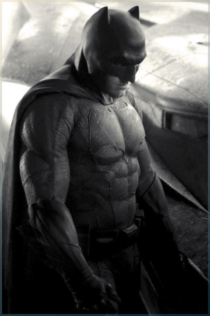

Au nom de ses parents assassinés, Bruce Wayne mène
une guerre éternelle contre
les criminels de Gotham City.
Il est vengeur. Il est la nuit.

BATMAN AU CINÉMA
Le personnage de Batman est un super héros de l’univers de DC Comics. Il a été créé par le dessinateur Bob Kane et le scénariste Bill Finger et apparaît pour la première fois dans le comic book Detective Comics en 1939. Batman se différencie de Superman, alors héros majeur de DC, car il n’a aucun pouvoir. Il sera porté au cinema pour la première fois en 1943 par Lewis Wilson et bénéficiera de nombreux reboot, donnant l’occasion à de multiples acteurs d’interpréter l’homme chauve-souris. Voici les trois derniers :

Catwoman - Zoé Kravitz
2022

Catwoman - Zoé Kravitz
2022

Catwoman - Zoé Kravitz
2022

ACTION, ADVENTURE
Batman Begins
IMDB: 8.2
Le jeune Bruce Wayne assiste impuissant au meurtre de ses parents. Profondément traumatisé, il grandit obnubilé par un désir de vengeance. La Ligue des ombres, une secte de guerriers ninja dirigée par Ra's al Ghul, se chargera de son entraînement. De retour chez lui à Gotham, avec l'aide de son majordome Alfred Pennyworth, Bruce Wayne se lance alors dans la lutte contre le crime sous le nom de Batman.

PRENONS CONTACT
La seule façon raisonnable de vivre en ce bas monde, c'est en dehors des règles.
The Dark Knight : Le Chevalier Noir - Le Joker à Batman (2008)